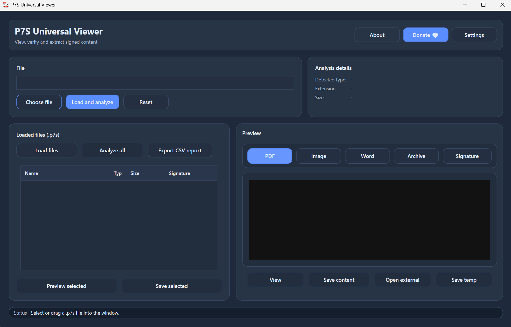
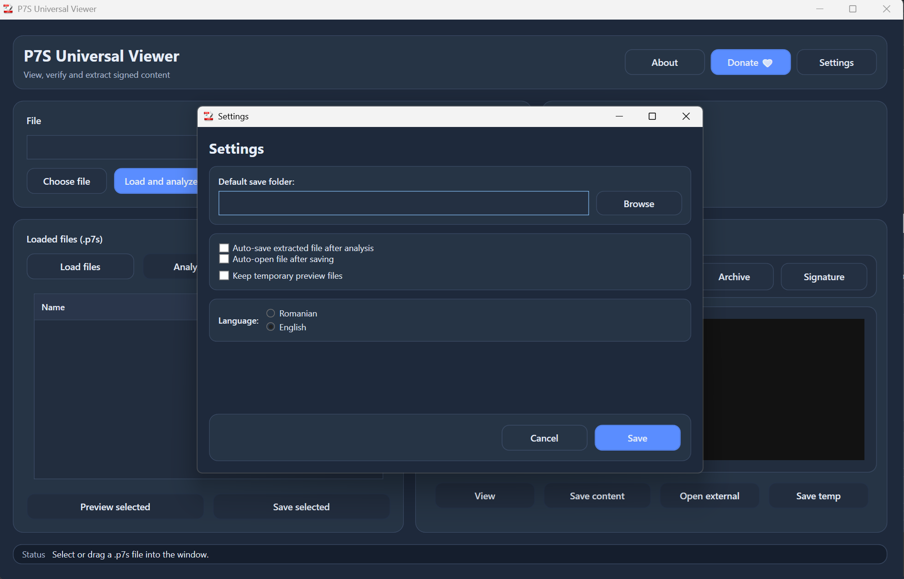

Open P7S File on Windows with a Free P7S Viewer
P7S Universal Viewer is a free Windows tool that helps you open, inspect and extract content from .p7s files. If you receive signed email attachments or digitally signed containers and cannot see the real file inside, this viewer gives you a simple way to access the content.
What is a .p7s file?
A .p7s file is commonly used for digital signatures and secure document exchange. In many cases it is not a normal document by itself, but a signed container related to email systems, certificates or official document workflows. That is why double-clicking the file often does not show the actual content you expect.
Signed container
A .p7s file often stores signature-related data around a document or attachment rather than acting like a regular PDF or Word file.
Security format
These files are often associated with digital signatures, secure email attachments and document verification workflows.
Real content inside
The file you actually need may be embedded inside the .p7s container, such as PDF, Word, Excel, XML or image content.
Main features of P7S Universal Viewer
This tool is designed to solve the real problem users have: opening a .p7s file and getting the real content out quickly, without dealing with complicated command line tools or certificate utilities.
Open .p7s files
Load and inspect .p7s files on Windows through a simple interface.
Extract real content
Access the actual files stored inside the signed container.
Simple workflow
No advanced OpenSSL knowledge required for normal use.
Windows focused
Built specifically for Windows users who need a practical solution.
How to open a .p7s file in Windows
If you need to open a .p7s file, the easiest approach is to use a viewer that can read the signed container and extract the real content from it.
Download the viewer
Get the latest version from the GitHub release page.
Open the application
Launch the viewer on your Windows PC.
Select the .p7s file
Choose the signed file you received by email or from a document workflow.
View or extract content
Inspect the signed data and extract the embedded PDF, Word, Excel, XML or image file.
Why this works better than a default file open
Windows usually does not know how to display .p7s files as user-facing documents. A dedicated viewer understands the signed container and can reveal the real content.
- Useful for non-technical users
- Avoids manual command line steps
- Helps when a PDF or document is hidden inside the signed file
- Good for quick access to the real content
Screenshots
Example application screens showing how the viewer can help with signed files and embedded content.

Main window
Open a .p7s file and inspect its data through a simple Windows interface.

Content and extraction workflow
Review file information and access the actual document stored inside the container.
Common problems with .p7s files
These are the most frequent reasons people search for a P7S viewer or extractor.
The file does not open
This usually happens because Windows does not treat a .p7s file as a normal document format. A dedicated viewer is needed to read or extract the content.
The .p7s file looks empty
The visible file may only represent signed data. The real file inside may need to be extracted first.
I expected a PDF but got .p7s
In many workflows, the PDF is wrapped in a signed container. You may need to open the .p7s file to recover the PDF document.
I do not want command line tools
Tools like OpenSSL may work for advanced users, but many people simply need a Windows viewer that can open the file and extract the content quickly.
What can be inside a .p7s file?
Depending on how the signed file was created, the content inside may include one or more document types.
| Possible content | Typical use case | Why a viewer helps |
|---|---|---|
| PDF documents | Signed invoices, forms, official files | Extract and open the real PDF |
| Word documents | Signed editable documents | Recover the embedded file |
| Excel files | Reports, spreadsheets, exports | Access data inside the container |
| XML files | Structured documents and system exports | Extract technical or business data |
| Images | Attached evidence, scans, signed visual content | Open files without manual decoding |
| Signature data only | Verification-related information | Inspect the signed container more easily |
Why use a viewer instead of only technical tools?
Technical tools can be powerful, but most users who search for “open p7s file” do not want to handle command line syntax, certificates and structure dumps just to get a document out.
Command line tools
- Better for advanced technical users
- May require extra syntax and format knowledge
- Can be inconvenient for quick document access
- Not ideal for everyday Windows users
P7S Universal Viewer
- Simple visual workflow
- Focused on opening and extracting content
- Useful for practical document access
- Designed for people who just need results quickly
Frequently asked questions
Can I open a .p7s file for free?
Yes. This tool is intended to help users open and inspect .p7s files on Windows without paying for enterprise certificate software.
Does this work on Windows?
Yes. P7S Universal Viewer is focused on Windows users.
What if my .p7s file contains a PDF?
That is a common case. The PDF may be embedded inside the signed container and can often be extracted with a dedicated viewer.
Why can I not open .p7s directly?
Because many systems treat it as signed data, not as a normal end-user document format.
Can a .p7s file contain Word, Excel or XML files?
Yes. Depending on how the signed container was created, these formats may be included.
Do I need OpenSSL to use this viewer?
No. The point of the viewer is to make the workflow easier for users who do not want to rely on command line tools.
Is this useful for signed email attachments?
Yes. Many people encounter .p7s files after receiving signed email attachments and need a way to extract the real content.
Who is this tool for?
Office users
People who receive signed files and simply want the real PDF or document inside.
IT support
Teams who need a practical way to help users open unfamiliar signed attachments.
Business workflows
Anyone dealing with digitally signed forms, invoices, exports or official files.
Download P7S Universal Viewer
Get the latest Windows release and start opening .p7s files, extracting embedded content and accessing signed documents more easily.
Direct release page: github.com/alintibi/p7s-universal-viewer/releases